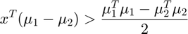

Contents
clear; close all; clc;
a) Prototype Classifier
The purpose of a classifier is to find a decision boundary where the posterior probability of a datapoint x that belongs to the dataset X belonging to classes C1 and C2 are the same. Therefore, in terms of posterior probabilities, the goal of a Maximum Likelihood Classifier is to equate:
Using Bayes' rule, we have:
Let the priors be:
and
And the likelihoods be:
and
The denominator is the net sum of posterior probabilities of the datapoint belonging to each class. Therefore, we can summarize as:
The denominators in the equality can be ignored and hence we have:

Now if the data are drawn from Gaussian distributions, then we have:
and
where, , and
In the scenario where the covariances of the two classes are scalar multiples of identity matrix, we have:
Thus, the equality becomes:
Therefore:
Taking natural logarithms on both sides, we get:
Therefore,
Now we can expand the product of vectors as:
Hence we can expand the equality as:
Rearranging terms, we get:
Multiplying both sides by , we get:
Hence, we have:
The decision boundary exists for the case where . Hence at the boundary, we get:
Also, the linear discriminant "prototype classifier" assumes that the covariances of both the classes is equal. Therefore, we have
Therefore,
Therefore, we can classify the data as belonging to class 1 when:

Otherwise, the datapoint belongs to class 2.
The discriminant vector here is:
And the criterion is:
load('fisherData.mat') mean_data1 = mean(data1); % mean of data1 mean_data2 = mean(data2); % mean of data2 w = mean_data2 - mean_data1; % the discriminant vector w_norm = sqrt(sum(w.^2)); % norm of discriminant vector w_hat = w./w_norm; % unit discriminant vector midpoint_data = (mean_data1 + mean_data2)/2; % midpoint between means of two datasets figure(); scatter(data1(:, 1), data1(:, 2), 'b*', 'DisplayName', 'dog vocalizations'); hold on; scatter(data2(:, 1), data2(:, 2), 'ro', 'DisplayName', 'cat vocalizations'); plot([midpoint_data(1) - w_hat(1)/2, midpoint_data(1) + w_hat(1)/2], ... [midpoint_data(2) - w_hat(2)/2, midpoint_data(2) + w_hat(2)/2], ... 'm-', 'DisplayName', 'w hat', 'LineWidth', 1.5) axis equal; x_dec_boundary = xlim; % x limits of the graph % Computing decision boundary given w_hat y_dec_boundary = decision_boundary(x_dec_boundary, midpoint_data, w_hat); plot(x_dec_boundary, y_dec_boundary, 'k-', 'LineWidth', 2, ... 'DisplayName', 'boundary') set(gca, 'FontSize', 14) set(gca, 'LineWidth', 2) xlim(x_dec_boundary) title('Prototype Classifier') legend('Location', 'northeastoutside'); % Computing fraction correctly classified by the classifier

NOTE: For some reason this has been printed at the end of the document.
frac_correctly_classified_prototype = classification_performance(data1, ...
data2, x_dec_boundary, y_dec_boundary, w_hat)
frac_correctly_classified_prototype =
0.7357
b) Fischer's Linear Discriminant Classifier
The Fischer's Linear Discriminant assumes that the covariances of the two matrices are identical. However, they need not be multiples of identity matrix. Hence, the equation of the decision boundary is:
where, 
Therefore,
Taking natural logarithms on both sides:

Rearranging terms, we get:
At the decision boundary, we have: , therefore, we get:
Expanding the vector-matrix multiplications in the numerator and using the fact that covariance matrices are symmetric, we get:
Thus, the equality becomes:
Therefore, we can say that the datapoint belongs to Class 1 if:
Thus, the discriminant vector becomes:
where,
and the criterion is:
cov_data1 = cov(data1); % covariance of data 1 cov_data2 = cov(data2); % covariance of data 2 cov_combined = (cov_data1 + cov_data2)/2; % combined covariance w_hat_fisch = cov_combined \ w'; % Fischer's discriminant vector figure(); scatter(data1(:, 1), data1(:, 2), 'b*', 'DisplayName', 'dog vocalizations'); hold on; scatter(data2(:, 1), data2(:, 2), 'ro', 'DisplayName', 'cat vocalizations'); plot([midpoint_data(1) - w_hat_fisch(1)/2, midpoint_data(1) + w_hat_fisch(1)/2], ... [midpoint_data(2) - w_hat_fisch(2)/2, midpoint_data(2) + w_hat_fisch(2)/2], ... 'm-', 'DisplayName', 'w hat', 'LineWidth', 1.5) axis equal; x_dec_boundary = xlim; % x limits of the graph % Computing decision boundary given w_hat y_dec_boundary = decision_boundary(x_dec_boundary, midpoint_data, w_hat_fisch); plot(x_dec_boundary, y_dec_boundary, 'k-', 'LineWidth', 2, ... 'DisplayName', 'boundary') set(gca, 'FontSize', 14) set(gca, 'LineWidth', 2) xlim(x_dec_boundary) title("Fischer's Linear Discriminant Classifier") legend('Location', 'northeastoutside') % Computing fraction correctly classified by the classifier frac_correctly_classified_fischer = classification_performance(data1, ... data2, x_dec_boundary, y_dec_boundary, w_hat_fisch)
frac_correctly_classified_fischer =
0.7571
c) Regularized Fischer's discriminant Classifier
lambdas = 0:0.05:1; % weighting of covariance matrices runs = 1e3; train_size = floor(0.95 * size(data1, 1)); frac_correctly_classified_cv = zeros(length(lambdas), runs); for run = 1:runs for ll = 1:length(lambdas) lambda = lambdas(ll); % Splitting train and test sets train1_indices = randperm(size(data1, 1), train_size); test1_indices = setdiff(1:size(data1, 1), train1_indices); train2_indices = randperm(size(data2, 1), train_size); test2_indices = setdiff(1:size(data2, 1), train2_indices); train1 = data1(train1_indices, :); train2 = data2(train2_indices, :); test1 = data1(test1_indices, :); test2 = data2(test2_indices, :); % Computing the discriminant vector for the regularized Fischer mean_train1 = mean(train1); mean_train2 = mean(train2); w = mean_train2 - mean_train1; w = w./sqrt(sum(w.^2)); midpoint_train = (mean_train1 + mean_train2)/2; cov_train1 = cov(train1); cov_train2 = cov(train2); cov_combined = (cov_train1 + cov_train2)/2; cov_estimated = (1 - lambda) .* cov_combined + lambda .* eye(2); w_hat_estim = cov_estimated \ w'; x_dec_boundary = xlim; % x limits of the graph % Computing decision boundary given w_hat y_dec_boundary = decision_boundary(x_dec_boundary, midpoint_train, ... w_hat_estim); % Computing fraction correctly classified by the classifier frac_correctly_classified_cv(ll, run) = classification_performance(test1, ... test2, x_dec_boundary, y_dec_boundary, w_hat_estim); end end % Computing mean and error of correctly classified datapoints over runs frac_correctly_classified_mean = mean(frac_correctly_classified_cv, 2); frac_correctly_classified_stderror = std(frac_correctly_classified_cv, 0, 2)... ./sqrt(size(frac_correctly_classified_mean, 2)); figure() errorbar(lambdas, frac_correctly_classified_mean, frac_correctly_classified_stderror) xlabel('\lambda') ylabel('proportion correctly classified') title("Fischer's Linear Discriminant Classifier cross-validation")
We can see that there are huge errorbars across the range of lambdas when checking for accuracy of classification. This is because of the choice of 95-5 classification for a small dataset of size 140. For smaller datasets, it is essential for the test set to be representative of the training set. Hence an ideal way to test the classifiers would be have a larger test size. Running the same approach with a 60-40 classification:
train_size = floor(0.6 * size(data1, 1)); frac_correctly_classified_cv = zeros(length(lambdas), runs); for run = 1:runs for ll = 1:length(lambdas) lambda = lambdas(ll); % Splitting train and test sets train1_indices = randperm(size(data1, 1), train_size); test1_indices = setdiff(1:size(data1, 1), train1_indices); train2_indices = randperm(size(data2, 1), train_size); test2_indices = setdiff(1:size(data2, 1), train2_indices); train1 = data1(train1_indices, :); train2 = data2(train2_indices, :); test1 = data1(test1_indices, :); test2 = data2(test2_indices, :); % Computing the discriminant vector for the regularized Fischer mean_train1 = mean(train1); mean_train2 = mean(train2); w = mean_train2 - mean_train1; w = w./sqrt(sum(w.^2)); midpoint_train = (mean_train1 + mean_train2)/2; cov_train1 = cov(train1); cov_train2 = cov(train2); cov_combined = (cov_train1 + cov_train2)/2; cov_estimated = (1 - lambda) .* cov_combined + lambda .* eye(2); w_hat_estim = cov_estimated \ w'; x_dec_boundary = xlim; % x limits of the graph % Computing decision boundary given w_hat y_dec_boundary = decision_boundary(x_dec_boundary, midpoint_train, ... w_hat_estim); % Computing fraction correctly classified by the classifier frac_correctly_classified_cv(ll, run) = classification_performance(test1, ... test2, x_dec_boundary, y_dec_boundary, w_hat_estim); end end % Computing mean and error of correctly classified datapoints over runs frac_correctly_classified_mean = mean(frac_correctly_classified_cv, 2); frac_correctly_classified_stderror = std(frac_correctly_classified_cv, 0, 2)... ./sqrt(size(frac_correctly_classified_mean, 2)); figure() errorbar(lambdas, frac_correctly_classified_mean, frac_correctly_classified_stderror) xlabel('\lambda') ylabel('proportion correctly classified') title("Fischer's Linear Discriminant Classifier cross-validation")

We can now see that there is a trend in the performance of the classifier with an increase in lambda. Specifically, we see that there is a decrease in classification accuracy as a function of lambda. This suggests that a a Fischer's Linear Discriminant classifier is better than a prototype classifier for this dataset.
d) Quadratic Classifier
For QDA, the covariances of the two datasets are not assumed to be the same, thus the equation of the decision boundary becomes:
Taking natural logarithms on both sides, we get:
For the decision boundary, we have and multiplying both sides by 2, we get:
Rearranging terms, we get:
Therefore,
Therefore,
Therefore, the decision is Class 1 if:
$ x^T (\Sigma_1 - \Sigma_2)^{-1} x - 2(\Sigma_1^{-1} \mu_1 - \Sigma_2^{-1} \mu_2)^T x + (\mu_1^T \Sigma_1^{-1} \mu_1) - \mu_2^T \Sigma_2^{-1} \mu_2) - ln(\frac{|\Sigma_2 }{\Sigma_1 |}) - 2 ln(\frac{p_1}{p_2}) < 0 $$
And the decision is Class 2, otherwise.
figure(); scatter(data1(:, 1), data1(:, 2), 'b*', 'DisplayName', 'dog vocalizations'); hold on; scatter(data2(:, 1), data2(:, 2), 'ro', 'DisplayName', 'cat vocalizations'); % Creating XY a matrix of co-ordinates of datapoints that span the space of % the graph xx_ = xlim; yy_ = ylim; pps = 4*1e2; xx = linspace(xx_(1), xx_(2), pps); yy = linspace(xx_(1), xx_(2), pps); [X, Y] = meshgrid(xx, yy); XY = [X(:) Y(:)]; % Computing likelihood for each datapoint coming from a given distribution p1 = mvnpdf(XY, mean_data1, cov_data1); p2 = mvnpdf(XY, mean_data2, cov_data2); diff_p = p1 - p2; scatter(XY(:, 1), XY(:, 2), [], diff_p, 'MarkerFaceAlpha', 0.2, ... 'MarkerEdgeAlpha', 0.2) p1_Quadratic = reshape(p1,length(yy),length(xx)); p2_Quadratic = reshape(p2,length(yy),length(xx)); idx_Ygrid = zeros(1,length(xx)); % The boundary condition is when p1_Quadratic = p2_Quadratic. However, to % avoid underflow error we are instead equating log(p1_Quadratic) = % log(p2_Quadratic). logDiff = (log(p1_Quadratic) - log(p2_Quadratic)) < 1e-3; % Next we compute the decision boundary by checking for the minimum value % of logDiff that equates to 0 in the xy plane. The first datapoint is % selected as values below that indicate that datapoint belongs to the % cluster 2. for kk = 1:length(xx) idx_Ygrid(kk) = length(yy) - find(flipud(logDiff(:,kk)) == 0,1); end plot(xx,yy(idx_Ygrid),'k-','LineWidth',2, 'DisplayName', 'Boundary'); scatter(data1(:, 1), data1(:, 2), 'b*', 'DisplayName', 'dog vocalizations'); scatter(data2(:, 1), data2(:, 2), 'ro', 'DisplayName', 'cat vocalizations'); plot(mean_data1(1),mean_data1(2),'b+','LineWidth',3); plot(mean_data2(1),mean_data2(2),'r+','LineWidth',3); hold off; legend()

Next we compute the probability of each datapoint coming from a Gaussian distribution given by the mean and covariance of either cluster. The quadratic classifier will call the cluster based on whether the probability of one is greater than the other.
p1_data1 = mvnpdf(data1, mean_data1, cov_data1);
p2_data1 = mvnpdf(data1, mean_data2, cov_data2);
p1_data2 = mvnpdf(data2, mean_data1, cov_data1);
p2_data2 = mvnpdf(data2, mean_data2, cov_data2);
correct_data1 = sum(p1_data1 >= p2_data1)
correct_data2 = sum(p2_data2 >= p1_data2)
frac_correctly_classified_qda_ = (correct_data1 + correct_data2)./...
(2 * size(data1, 1))
correct_data1 =
60
correct_data2 =
52
frac_correctly_classified_qda_ =
0.8000
We can see that the QDA performs better than prototype, LDA, or regularized LDA for this dataset. However, this might not always be the case. For datasets that have equal covariances or a scalar multiple of identity as a covariance matrix, it makes sense to use simpler classifiers like LDA or prototype as they have fewer parameters to optimize on and hence the chances of overfitting would be less.
Functions
function y_dec_boundary = decision_boundary(x_dec_boundary, ... midpoint_data, w_hat) % The function computes a decision boundary given the discriminant % vector. It uses the information that decision boundary is % perpendicular to the discriminant vector and that it passes through % the midpoint between the means of two datasets. The equation of line % can then be used to compute the decision boundary. dec_boundary_slope = -(w_hat(1))/(w_hat(2)); y_dec_boundary(1) = midpoint_data(2) + dec_boundary_slope * ... (x_dec_boundary(1) - midpoint_data(1)); y_dec_boundary(2) = midpoint_data(2) + dec_boundary_slope * ... (x_dec_boundary(2) - midpoint_data(1)); end function frac_correctly_classified = classification_performance(data1, ... data2, x_dec_boundary, y_dec_boundary, w_hat) % The function computes the fraction of datapoints that are correctly % classified by the given linear classifier. It computes the expected % y-value given x-value of each datapoint were that datapoint to lie on % the decision boundary. It then uses the predicted y-value and the % actual y-value to decide the class of the datapoint and checks it with % the true class of the datapoint. dec_boundary_slope = -(w_hat(1))/(w_hat(2)); x_ones = ones(size(data1(:, 1))) .* x_dec_boundary(1); y_ones = ones(size(data1(:, 1))) .* y_dec_boundary(1); y_data1 = y_ones + dec_boundary_slope * (data1(:, 1) - x_ones); y_data2 = y_ones + dec_boundary_slope * (data2(:, 1) - x_ones); correct_data1 = sum(y_data1 >= data1(:, 2)); correct_data2 = sum(y_data2 <= data2(:, 2)); frac_correctly_classified = (correct_data1 + correct_data2)./... (2 * size(data1, 1)); end function count_correct = frac_correctly_classified_qda(data, cov1, cov2, mean1, mean2, ... p1, p2, data_num) % An attempt was made to compute the correctly classified datapoints using the % closed-form solution. No clue why it doesn't work. decs = zeros(size(data, 1), 1); for ss = 1:size(data, 1) x = data(ss, :); decs(ss) = x * inv(cov1 - cov2) * x' - 2 * (inv(cov1) * mean1' - ... inv(cov2) * mean2')' * x' + ((mean1 * inv(cov1) * mean1') - (mean2 * ... inv(cov2) * mean2')) - log(det(cov2)./det(cov1)) - 2 * log(p1(ss)./p2(ss)); end if data_num == 1 count_correct = sum(decs < 0); else count_correct = sum(decs > 0); end end function boundary = dec_bound_qda(XY, cov1, cov2, mean1, mean2) % An attempt was made to compute the decision boundary using the % closed-form solution. No clue why it doesn't work. x = []; y = []; for ss = 1:size(XY, 1) xy = XY(ss, :); decs = xy * inv(cov1 - cov2) * xy' - 2 * (inv(cov1) * mean1' - ... inv(cov2) * mean2')' * xy' + ((mean1 * inv(cov1) * mean1') - (mean2 * ... inv(cov2) * mean2')) - log(det(cov2)./det(cov1)); if decs < 1e-2 x = [x, xy(2)]; y = [y, xy(1)]; end end boundary = [x(:) y(:)]; end